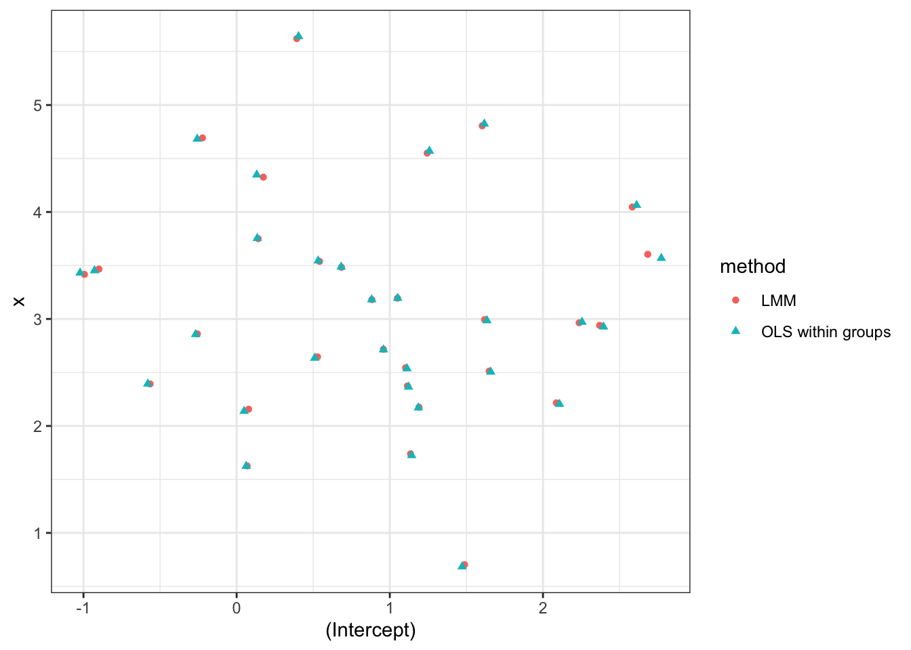

library(tidyverse)
library(lme4)
set.seed(29234)
# simulation parameters
ni <- 100 # observations per group
m <- 30 # number of groups
var_x <- 1
var_e <- 1 # residual variance
var_a <- 1 # variance of random intercept
var_b <- 1 # variance of random slope
beta0 <- 1 # overall intercept
beta1 <- 3 # overall slope
# generate group ids and X
group_id <- rep(1:m, each=ni)
x_means <- rnorm(m, sd=sqrt(var_x))[group_id]
x <- x_means + rnorm(ni*m)
# generate a, b, y
a <- rnorm(m, sd = sqrt(var_a))[group_id]
b <- rnorm(m, sd = sqrt(var_b))[group_id]
y <- beta0 + a + beta1*x + b*x + rnorm(m*ni, sd=sqrt(var_e))Class activity: shrinkage
Example simulation
In the lecture and previous activity, we saw that the mixed model coefficients \(\widehat{\boldsymbol{\beta}}_i \equiv \widehat{\boldsymbol{\beta}} + \widehat{\boldsymbol{u}}_i\) for a group are shrunk towards the overall effects \(\widehat{\boldsymbol{\beta}}\) compared to the estimates from OLS in each group.
The purpose of this example is to show this shrinkage in a simulation, and to investigate the factors contributing to the degree of shrinkage.
We will simulate data from the model
\[Y_{ij} = (\beta_0 + a_i) + (\beta_1 + b_i)X_{ij} + \varepsilon_{ij}\]
Simulation code:
Fitting the linear mixed model
# fit the model
m1 <- lmer(y ~ x + (x|group_id))
# coefficients from the mixed model
mixed_models <- coefficients(m1)$group_idOLS within each group
We can also fit a linear model with OLS within each group, and extract the coefficients (requires the broom package):
lm_models <- data.frame(x, y, group_id) |>
nest_by(group_id) |>
mutate(model = list(lm(y ~ x, data = data))) |>
reframe(broom::tidy(model)) |>
select(group_id, term, estimate) |>
pivot_wider(names_from = term,
values_from = estimate)Compare the results
Finally, let’s compare the results between the different estimates for each group – we will plot the estimated intercept and slope for each group, for each method.
mixed_models |>
mutate(group_id = 1:m,
method = "LMM") |>
bind_rows(lm_models |>
mutate(method = "OLS within groups")) |>
ggplot(aes(x = `(Intercept)`,
y = x,
color = method, shape=method)) +
geom_point() +
theme_bw()
Expression for shrinkage
For the mixed model described above, it turns out that
\[ \widehat{\boldsymbol{\beta}}_i = \mathbf{W}_i\widehat{\boldsymbol{\beta}}_i^{\text{OLS}} + (\mathbf{I} - \mathbf{W}_i)\widehat{\boldsymbol{\beta}} \]
where
\[ \mathbf{W}_i = \mathbf{G}_i(\mathbf{G}_i + \widehat{\sigma}_{\varepsilon}^2 (\mathbf{Z}_i^T \mathbf{Z}_i)^{-1})^{-1} \]
In R, we can make \(\mathbf{G}_i\), \(\mathbf{Z}_i\), and \(\mathbf{W}_i\) with:
i <- 1
Gi <- Matrix::bdiag(VarCorr(m1))
Zi <- cbind(1, x[group_id == i])
s2 <- as.data.frame(VarCorr(m1))$vcov[4]
Wi <- Gi %*% solve(Gi + s2 * solve(t(Zi) %*% Zi))